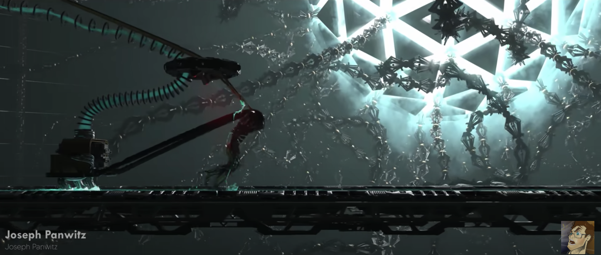
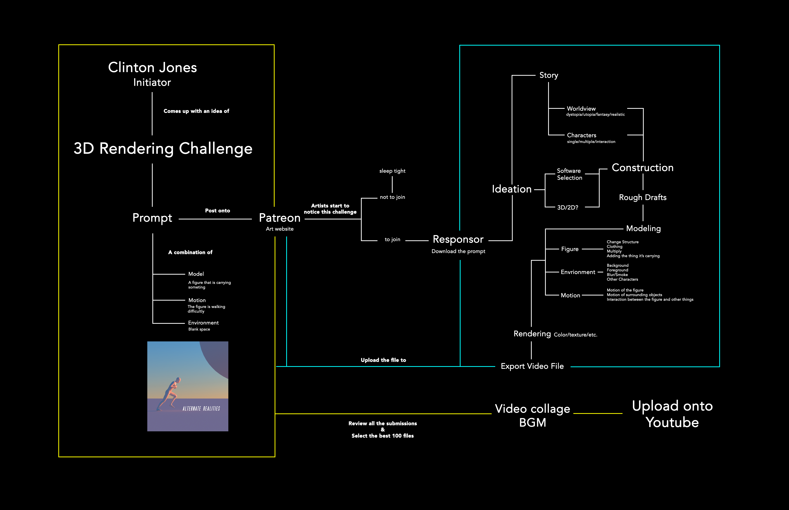
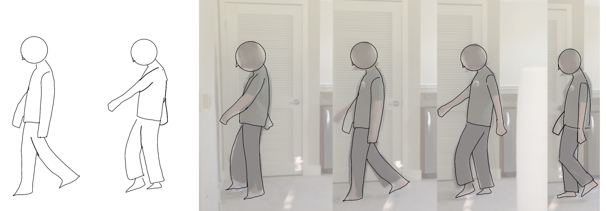
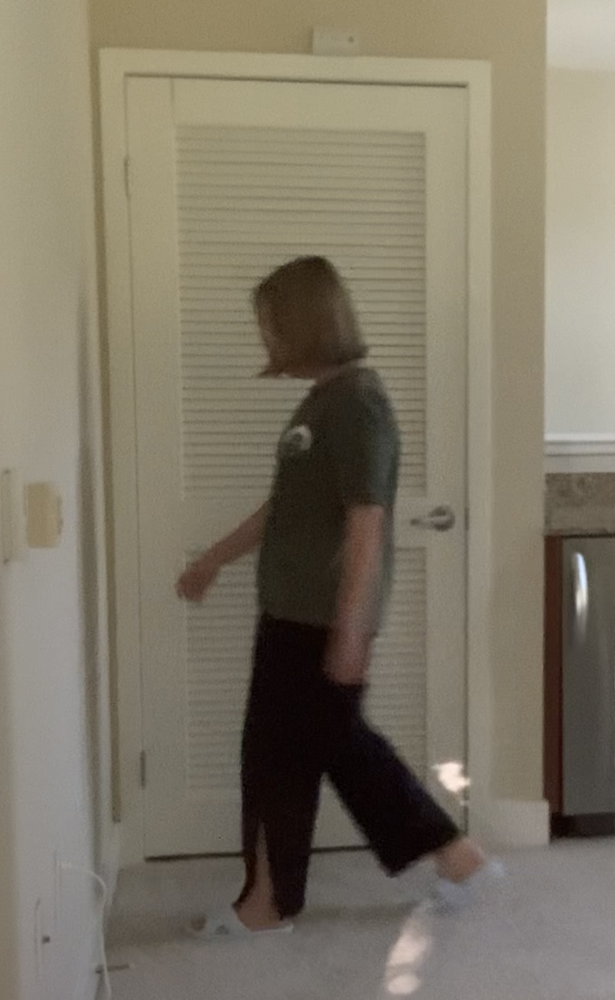
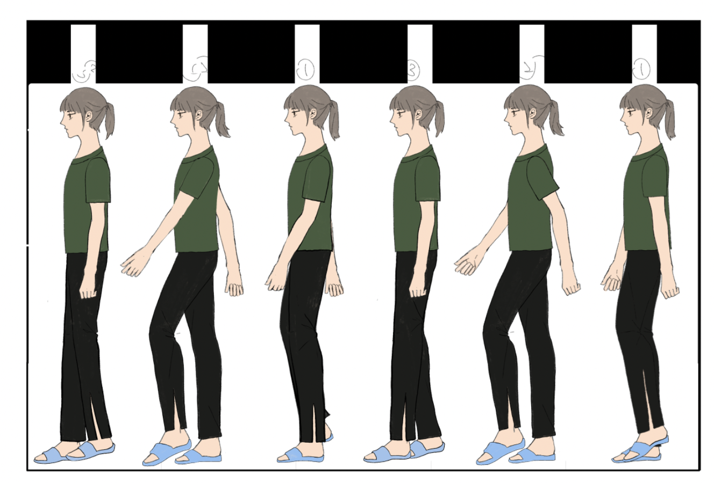
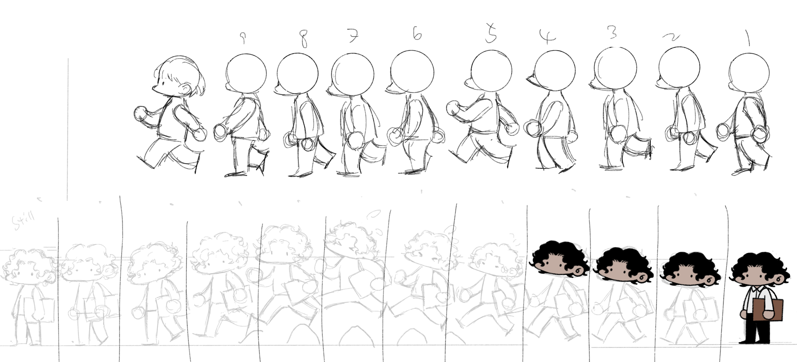

Project 1 TECHNO-KLUDGING
Starting Point
The "artifact" I found interesting was a CG challenge on Patreon. CG artist Clinton Jones posted a white model of a person walking, and asked the other artists to come up with their own renders based on the white model. He collected the best 100 renders and posted the video on his youtube channel. The video then went viral in the whole world.
System Diagram
Zoetrope Prototype
|  |  |
|---|
Next Steps
To make the animation more fluent. I'm re-drawing each slides into a more cartoon style. I also prepared adafruit motors to assemble after the animation drawing complete.
